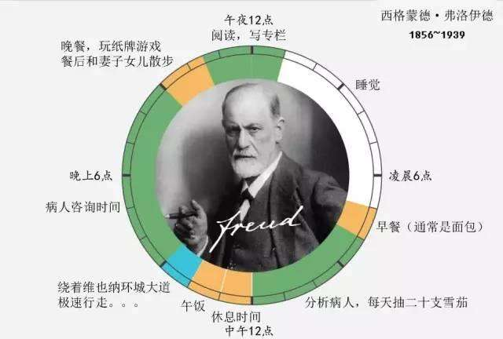
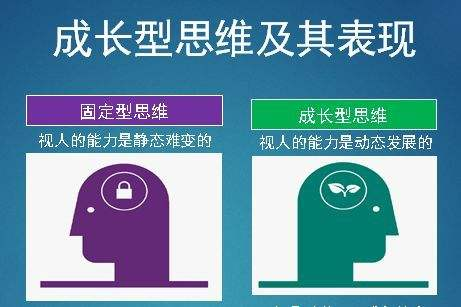
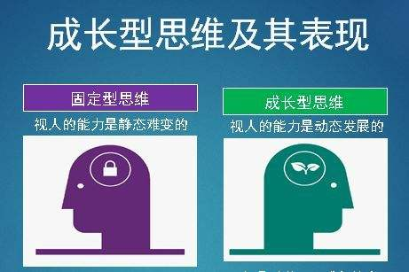
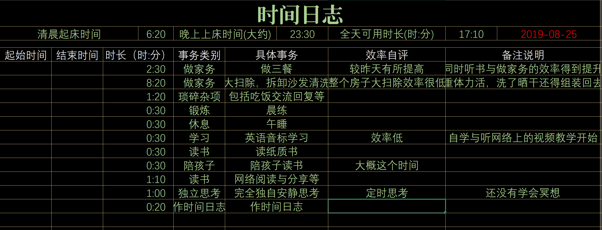
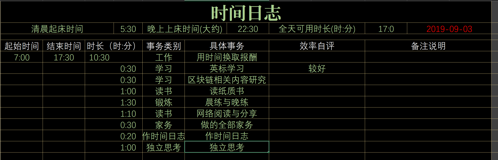
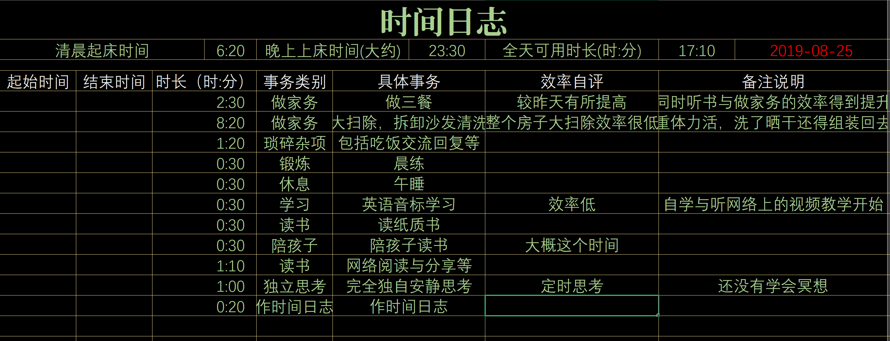
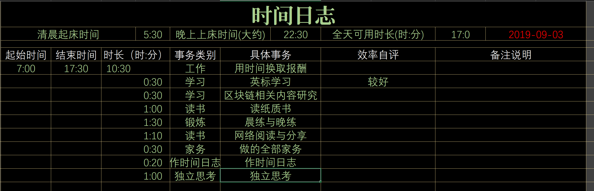
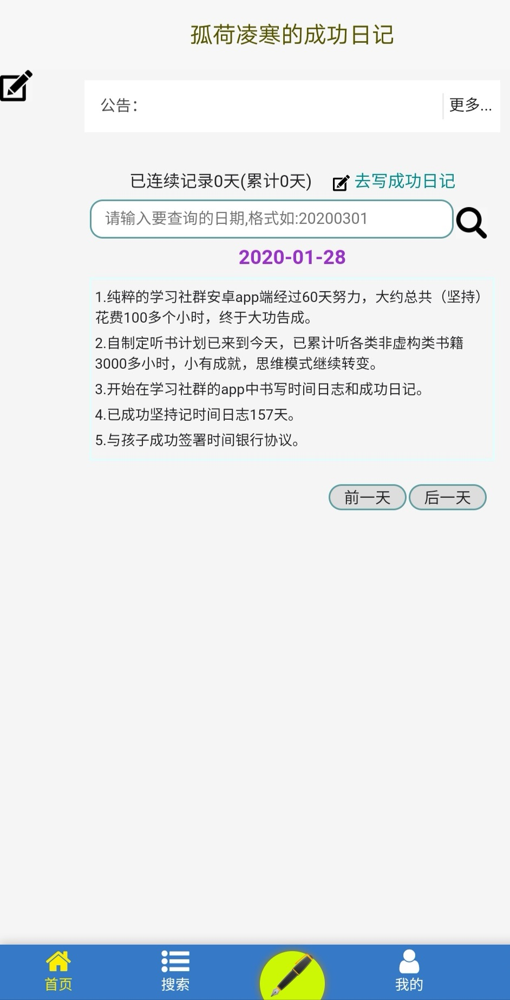
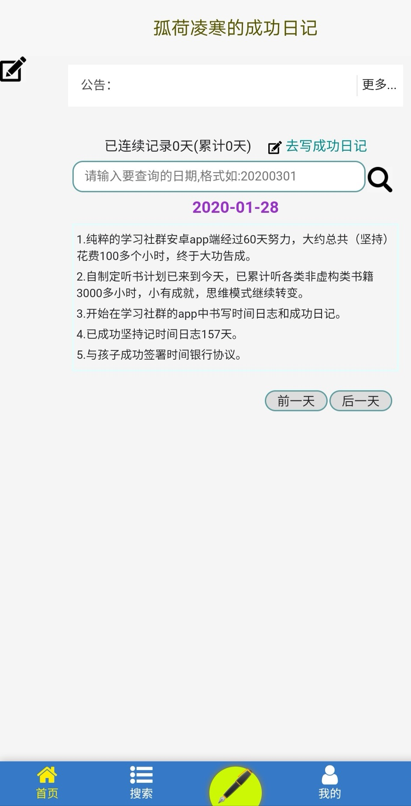
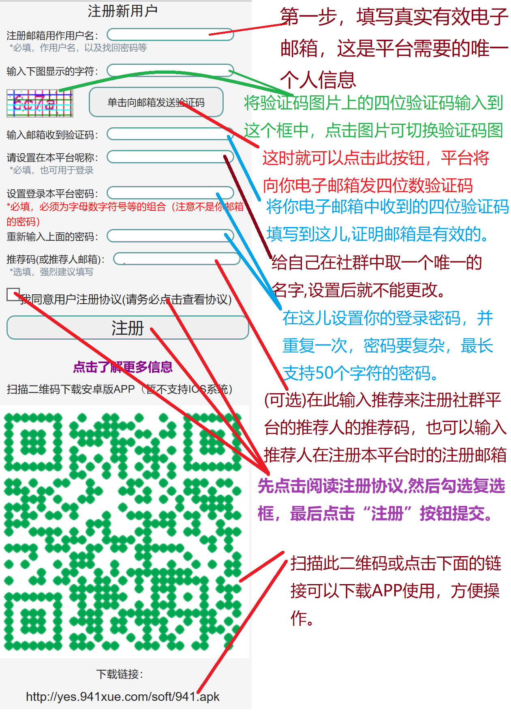

就是要学社区
为什么已经工作的我们还需要终身学习？
 本节提要:
本节提要: 一个人未来唯一持久的优势就是你有能力比你的竞争对手学习得更快。
★知识的半衰期越来越短,我们拥有的知识每天都在变得越来越过时。
★去中心化的趋势日益明显,每个人都成为一个节点进行创造和分享。
★去中心化的趋势日益明显,每个人都成为一个节点进行创造和分享。
【就是要学】社区QQ群：646854445
为什么已经长大的我们还需要继续成长？
本节提要: 一辈子两个东西最重要，一个是你是不是能在每一天的，日常生活中间，通过每天的成长获得快乐和幸福的能力
★这个时代已经不是看年龄的大小来评判成长的大小
★越来越多比你我年青的个体，都通过自己的方式，获得了很好的成长。
★长大并不是成长，年龄的增长并不会带来自然的心智的成长。
★在整个生命的历程中，不断的成长，是我们必然的使命。

★越来越多比你我年青的个体，都通过自己的方式，获得了很好的成长。
★长大并不是成长，年龄的增长并不会带来自然的心智的成长。
★在整个生命的历程中，不断的成长，是我们必然的使命。

【就是要学】社区QQ群：646854445
也许你与成功只差一个记录时间的习惯
本节提要: 为什么成功的人总有那么多的时间与精力留下那么多作品与人生的印记，而更多的人却不行？难道时间对他们格外慷慨吗？
★著名的组织学家聂佛梅瓦基说:"蠕虫那么长,人生可是那么短!"
★上帝给予每个人的时间其实都是公平的。
★不公平的是对时间的态度，每个人对时间才是不公平的。
★普罗大众何曾记录下自己的每天的时间流向呢？


★上帝给予每个人的时间其实都是公平的。
★不公平的是对时间的态度，每个人对时间才是不公平的。
★普罗大众何曾记录下自己的每天的时间流向呢？


缺乏坚持下去的毅力与信心,差的只是积累点滴成功的习惯
本节提要: 你不能妄想用同样的自己换一个不一样的未来，总需要改变点什么吧，而每天积累点滴的成功可以帮你迅速改变——关于勇气、关于自信、关于梦想。
★每天积攒你的点滴成功,你会发现：
★一件小事坚持够久，总会再某一天爆发。
★没有记录的人生，就没有发生。
★你将收获对事情的把握和肯定感以及自信。

★一件小事坚持够久，总会再某一天爆发。
★没有记录的人生，就没有发生。
★你将收获对事情的把握和肯定感以及自信。

【就是要学】社群致力纯净学习氛围及平台APP
阅读分享
社群成员相互激励，分享学习所获，平台与APP提供榜样大佬的好书推荐与导读提示，互帮互助，不再错过这个最好的时代。
时间日志
社群平台鼓励大家每天晚上记录自己的时间日志，可自愿分享，社区平台与APP提供免费的时间日志记录工具，互相激励，做一个人生时间的掌控者。
自学教程
自学能力是未来世界的核心竞争力，然而多数教育(基础教育与职业培训等)却让人越来越失去自学能力，我们共同的社群合作创作一系列从入门到提升自学能力的课程。
终身成长
成长是一辈子的事情，通过社群的共同激励，互相帮助，每一个人都将认识到年龄不是限制，起点不是限制，只要坚持学习，坚持每天有所收获，成长才是人生最快乐的事情。
【就是要学】社区QQ群：646854445
【就是要学】社群能给你带来什么？
本节提要: 自学是孤独的，自学是难以坚持的，但是有了社群成员的互相鼓励，有了榜样的带动，一路同行，自学能力的养成与成长将不再难。
★你将结识世界上最好的书，读每一本好书都是在与世界上最优秀的人对话，你的系统将开始升级
★你将见识与生活小圈子中那些常见的世界不同的另一个世界，在这里充满精进精神的大佬与精英
★你将认识并重塑你的时间观，真正感受到时间轻轻的流走，从而从时间的河里撷取出人生的真谛
★你将自识一个全新的自己，一个每天都比前一天更为成功，更为精进的自已，自信迎来成功未来
★你将见识与生活小圈子中那些常见的世界不同的另一个世界，在这里充满精进精神的大佬与精英
★你将认识并重塑你的时间观，真正感受到时间轻轻的流走，从而从时间的河里撷取出人生的真谛
★你将自识一个全新的自己，一个每天都比前一天更为成功，更为精进的自已，自信迎来成功未来
社群怎么组织
本节提要: 社群的基础组织是各种社交工具群组，如QQ,微信，电报；逐步建立社群平台，构建电脑端和移动端APP；社群将记录学习过程，提供每天自省自检，自我记录的免费工具，便于分享，便于合作创作；社群将完全去中心化的自治，成长记录使用分布式账本。
★QQ群组是基础建筑，在此热爱学习，有心终身成长的朋友在此聚集，思维碰撞，留下精华
★QQ群组与微信群组是阶梯，精英学习者，自律精进者，将在终身自学，终身成长的道路上勇攀高峰
★高阶群组将曾经孤立的自我与整个世界，与曾经与自己平等的世界进行牢固的联结，思维跃迁
★社群平台及APP将实现学习交流共享，成长有印记并长久记录，养成记录时间，积累成功的好习惯
★QQ群组与微信群组是阶梯，精英学习者，自律精进者，将在终身自学，终身成长的道路上勇攀高峰
★高阶群组将曾经孤立的自我与整个世界，与曾经与自己平等的世界进行牢固的联结，思维跃迁
★社群平台及APP将实现学习交流共享，成长有印记并长久记录，养成记录时间，积累成功的好习惯
【就是要学】社区QQ群：646854445
本节提要: 建议加入社群基础QQ群646854445，与追求精进，寻求成长，热学学习的群友交流，看他人的自学世界。
可以直接注册社群平台，充分使用社群平台免费提供的功能记录自己每天的时间日志与成功日记，与他人交流，留下自我成长印记。
